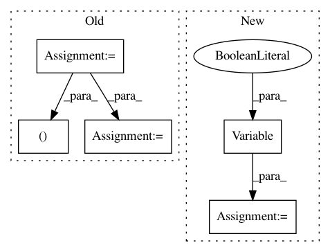

98e790696877d8065842d83f1819ae9c989a8c98,memcnn/models/revop.py,ReversibleBlockFunction,backward,#Any#Any#,117
Before Change
G_z1 = Gm.forward(z1_stop)
x2 = y2 - G_z1
x2_stop = Variable(x2.data, requires_grad=True)
F_x2 = Fm.forward(x2_stop)
x1 = y1 - F_x2
x1_stop = Variable(x1.data, requires_grad=True)
// Compute outputs building a sub-graph
z1 = x1_stop + F_x2
y2_ = x2_stop + G_z1
y1_ = z1
// Perform full backward pass on graph...
y = torch.cat([y1_, y2_], dim=1)
dd = torch.autograd.grad(y, (x1_stop, x2_stop) + tuple(Gm.parameters()) + tuple(Fm.parameters()), grad_output, retain_graph=False)
GWeights = [p for p in Gm.parameters()]
GWgrads = dd[2:2+len(GWeights)]
FWgrads = dd[2+len(GWeights):]
After Change
GWeights = [p for p in Gm.parameters()]
x2 = y2 - Gm.forward(z1_stop)
x1 = y1 - Fm.forward(x2)
x_stop = Variable(torch.cat([x1, x2], dim=1).data, requires_grad=True)
// compute outputs building a sub-graph
x1_, x2_ = torch.chunk(x_stop, chunks=2, dim=1)
y1_ = x1_ + Fm.forward(x2_)
y2_ = x2_ + Gm.forward(y1_)
y = torch.cat([y1_, y2_], dim=1)
In pattern: SUPERPATTERN
Frequency: 3
Non-data size: 5
Instances
Project Name: silvandeleemput/memcnn
Commit Name: 98e790696877d8065842d83f1819ae9c989a8c98
Time: 2018-06-06
Author: sil.vandeleemput@radboudumc.nl
File Name: memcnn/models/revop.py
Class Name: ReversibleBlockFunction
Method Name: backward
Project Name: silvandeleemput/memcnn
Commit Name: 90939c828e507c4aa8a6d6ca6d486e3f214b9b8f
Time: 2018-06-06
Author: sil.vandeleemput@radboudumc.nl
File Name: memcnn/models/revop.py
Class Name: ReversibleBlockFunction
Method Name: backward
Project Name: dpressel/mead-baseline
Commit Name: 39eea80aa70dcbcad57327ce8f9c4a325062fc86
Time: 2018-04-17
Author: dpressel@gmail.com
File Name: python/baseline/pytorch/torchy.py
Class Name:
Method Name: show_examples_pytorch